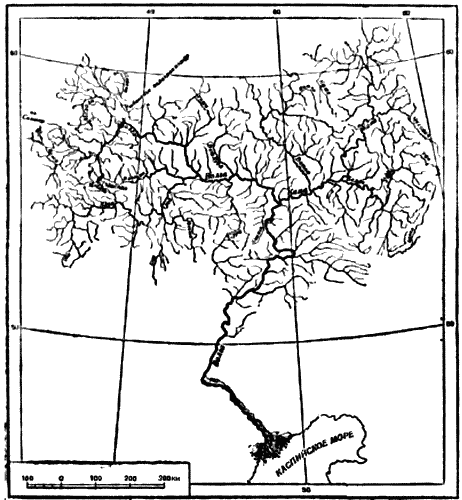

Сколько воды на земле?

Взгляните на глобус. Сразу бросается в глаза, что большая площадь его окрашена в голубовато-зелёный цвет. Это — моря и океаны земного шара. Только 29 процентов, то есть меньше трети его общей площади, занимают материки и острова; остальные две трети поверхности Земли, точнее 71 процент, покрывают океаны, моря и озёра.
Общее количество воды, наполняющей океаны и моря Земли, огромно. Если бы можно было собрать эту воду в одну каплю, то диаметр этой «капли» равнялся бы почти полутора тысячам километров.
Самый глубокий океан Земли — Тихий; его наибольшая глубина равна приблизительно 10, 8 километра. Средняя глубина океанов 3800 метров. Нетрудно подсчитать, что если бы вода была распределена по всей поверхности Земли равномерно, то весь земной шар был бы покрыт водным слоем толщиной около 2700 метров.
Примерно одну пятидесятую часть суши (около 27 миллионов квадратных километров площади) занимают озёра с пресными и солёными водами. Во всех озёрах нашей планеты воды в 5 тысяч раз меньше, чем в океанах и морях. По количеству озёр на первом месте в мире стоит Советский Союз, — озёр у нас насчитываются тысячи. Среди них самое большое солёное озеро — Каспийское; его площадь больше 400 тысяч квадратных километров.
Из озёр с пресными водами самые большие: Ладожское, Онежское, Байкал, Балхаш, Иссык-Куль; взятые вместе они занимают площадь более полумиллиона квадратных километров.
Есть на земном шаре места с огромным количеством пресных озёр, например север Европейской части СССР, Финляндия, Скандинавия. Более половины всей площади Норвегии занято озёрами.
Источниками озёрных вод являются главным образом атмосферные осадки, непосредственно падающие в озёра или приносимые в них реками и ручьями. Особенно чисты воды горных озёр; они питаются водой, которая образуется при таянии снегов и ледников.
Воды в реках Земли примерно в три раза больше, чем в озёрах. По числу и протяжённости рек Советский Союз также занимает первое место в мире.
Наша Волга — крупнейшая река Европы. Около 1080 рек, речек, протоков и озёр питают её бассейн (на рисунке 1 многих из них нет). Почти 250 кубических километров воды приносит Волга ежегодно в Каспийское море. Длина Волги равна 3694 километрам.

Рис. 1. Волга с притоками.
Ещё более мощные реки несут свои воды по Сибири в Северный Ледовитый океан. Это величайшие реки земного шара: Обь (длина её около 5200 километров), Енисей (4010 километров) и Лена (5014 километров). Общая протяжённость рек нашей Родины исчисляется миллионами километров.
Вода находится не только на поверхности нашей планеты. Огромные массы воды странствуют в атмосфере в виде пара, снежинок или водяных капель.
В нижнем слое атмосферы — тропосфере (до высоты 10–15 километров) вода есть всегда. В более высоких слоях воды уже нет.
Много воды заключено и в недрах Земли. Это так называемые подземные воды.
По количеству подземные воды стоят на втором месте, вслед за водами океанов и морей. Выдающийся русский учёный академик В. И. Вернадский писал: «Мы не знаем в природе ни одного твёрдого тела, которое бы в своём составе не заключало воды». И это действительно так.
Почвенный слой, покрывающий почти всю поверхность суши, в той или иной степени пропитан водой. Содержание воды в почве может колебаться от одного до 70 и больше процентов, но чаще всего встречаются почвы, увлажнённые до 15–25 процентов. Это означает, что по весу примерно одну пятую часть почвы составляет вода.
Вода собирается в пустотах и в мельчайших, невидимых глазом трещинах горных пород. В некоторых породах эти трещины могут составлять половину общего объёма породы, а в других, как например в граните, — всего лишь пол процента. Кроме того вода связана со многими минералами в прочные соединения и сохраняется в них в течение тысячелетий.
Вода проникает и в глубокие слои земной коры. Вода может присутствовать всюду, где есть такие условия, — температура и давление, при которых возможно существование воды. Благодаря огромным давлениям на больших глубинах вода может оставаться жидкой и при высоких температурах — до трёхсот с лишним градусов, а в растворах, которые она образует при соприкосновении с различными породами, до 400 градусов и выше. Нижней границей существования подземных вод считается приблизительно глубина в 13–14 километров. В ещё более глубоких слоях вода может находиться в виде паров. На глубинах 55–60 километров, где давление достигает 30 тысяч атмосфер, пары воды уже не существуют. Здесь вода находится в каком-то особом состоянии, о котором у нас нет пока точных представлений.
Таким образом в слое на 10–15 километров выше и километров на 50 ниже поверхности Земли вода существует во всех физических состояниях: твёрдом, жидком и газообразном.
Вода морей, атмосферная вода и подземная не живут обособленной друг от друга жизнью. В природе беспрерывно совершаются процессы, которые сопровождаются переносом огромных количеств воды из атмосферы на поверхность и в недра Земли, и обратно. С замечательным круговоротом, который совершает вода в природе, мы и познакомимся в следующем разделе.